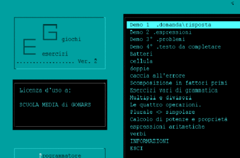

| |

E.G.
Descrizione:
Soft programmabile per esercitazioni o test
multidisciplinari.
Gli esercizi sono strutturati in livelli (Max 5 ).
Per ogni livello si possono programmare :"
- i punti acquisiti per svolgimento corretto;
- i punti persi per errore;
- i punti necessari per superare il livello;
- i punti da perdere al passare del tempo;
- la cadenza del tempo in secondi;
- l'eventuale tempo da dedicare al gioco;
I giochi disponibili sono due (gorillas e puzzle).
Entrambi permettono il gioco a due alunni.
Gorillas, è un soft prodotto da Autori non
identificati e allegato al sistema operativo dos??
come esempio di programmazione per QBASIC . 'Gira'
nei livelli intermedi mentre puzzle 'gira' nell'ultimo
livello.
Gli esercizi all'interno di un livello sono
proposti casualmente.
Ogni esercitazione si salva con una password
autore.
La password per aprire gli esercizi inseriti è
1234.
Gli esercizi d'esempio possono contenere degli
errori in quanto sono quelli prodotti dai ragazzi.
Purtroppo ho perso il lavoro finale !! ...e non
ho tempo per sistemare questi. Qualcuno è
disponibile? Ovviamente gratis !! |
|
| |
 |
| |
Informazioni
tecniche:
Per l'ardware sono sufficienti 286, con monitor
monocromatico, senza HD con il dos+soft nel dischetto.
La nostra aula informatica era strutturata così !!.
Il linguaggio adoperato è Visual Basic per DOS.
Questo è il codice
sorgente.
|
| |
Clicca
DOWNLOAD per
scaricare il soft (250 Kb) |
| |
|
| |
Visual
Basic per DOS è un marchio registrato dalla Microsoft |
| |
|